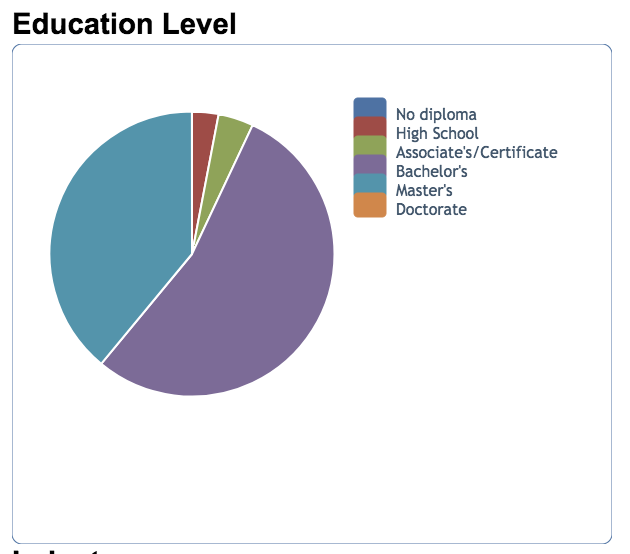

Leah
Dantin
Leah
Dantin


Enhancing Education

- 4 year degree in accounting with a focus/minor in IT
- 4 year degree in IT with a focus/minor in accounting
- Many collegiate majors can lead to this field as it is up-and-coming and it's a know it or you don’t line of work
- Certified Public Accountant exam, passing this will open many doors
- Certified Internal Audit exam, also recommended
- Certified Information Systems Auditor, is the final exam that would greatly increase the pay and employability
Skills:
IT knowledge
Extensive knowledge of Microsoft Excel
Ability to understand both the IT terms and translations for easier listening
Extensive education of correct laws
Flexibility of tasks and operations at hand